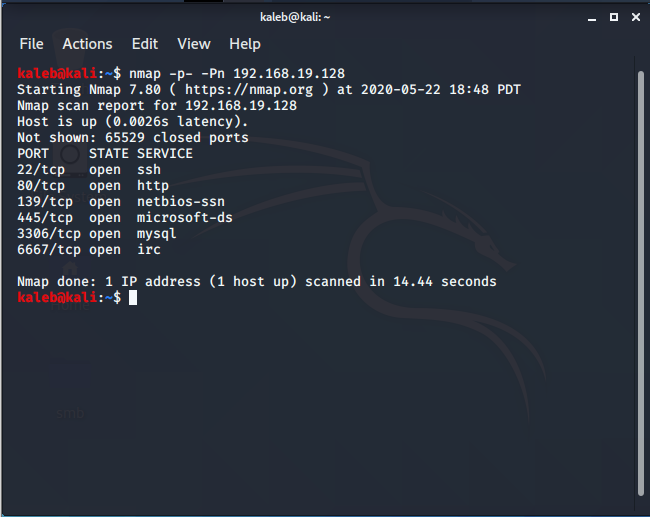

LazySysadmin
first I started out with a nmap scan which revealed ports 22, 80, 445, 139, 3306, and 6667

saw that port 80 was open and decided to check it out, but didn't find much
after looking at the website, i checked the shares on the server
mounted the share labeled "share$"
saw there was a file labeled "deets.txt" which had a password in it
now that we have a password, all that we need is a user.
decided to enumerate some more and chose to use enum4linux
when the scan was finished, it gave me a user for "togie"

now that i have a user and a password, i tried logging into SSH which worked

I had very limited commands so I decided to try some privilege escalation
now that we got extra commands, I navigated to "/" and saw there was a folder labeled root.
it wouldnt let me change directories into it so I changed its ownership using chown

now that I have ownership of that directory, I changed directories into the "root" directory and was able to gain the flag
SUCCESS!
I hope you enjoyed my writeup